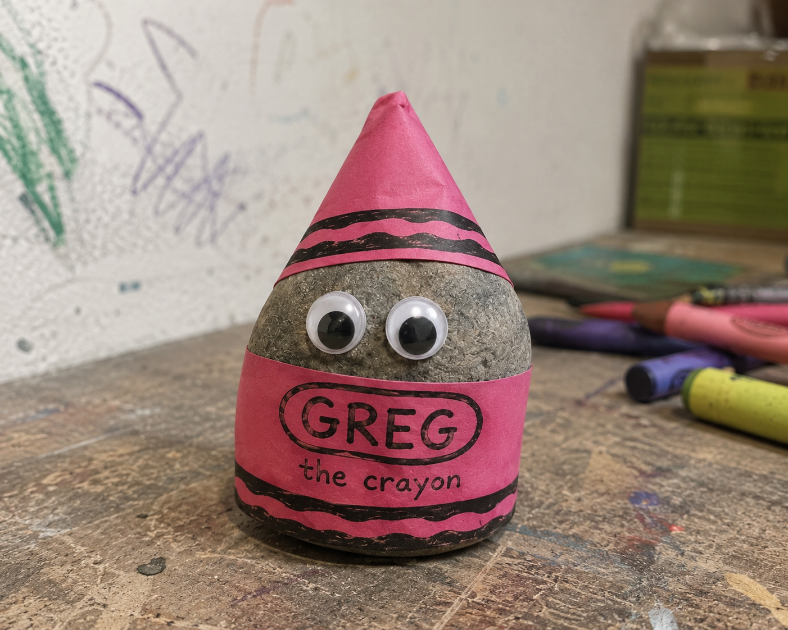

The Googly Eyes
The first sign by which Greg the Crayon was accepted without objection.
The First Wrapper Testament
Herein are preserved the origin, signs, calamities, councils, rebellions, and unpaid vending-machine debt of Greg the Crayon.
Open the scripture
Greg was originally just a rock behind a microwave somewhere in the void. During The Tuesday Incident, he found half a pink crayon wrapper in a puddle behind an abandoned petrol station, wrapped himself in it, and identified as a crayon.
Read Book IBook II
The first sign by which Greg the Crayon was accepted without objection.
The sacred vestment, dampened by prophecy and petrol-station puddle water.
The governing body that failed to object because of the spaghetti eclipse.
The Canon
The scripture is preserved as separate books, so the faithful may read without the homepage becoming a collapsing supermarket trolley.
The Living Faith
Start with the basic teachings, then move into ritual, holidays, people, relics, and the stranger margins of the faith.
Want to join the Church of Greg?Start Here
Daily Practice
World Guide
Advanced Weirdness
Book XV
Greg currently wanders the edges of reality carrying a broken crayon sharpener, seven cents, a suspicious spoon, and an expired loyalty card.
Read Book XV